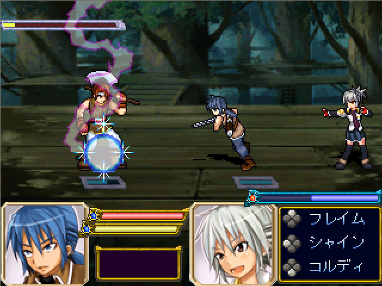

 |
| ◇DL(0.00MB)◇ ◇感想◇ |
| 術者名◇夏の陣でエターなりましたが何か |
| 魔具◇2000 |
| コメント◇ 前の剣士は自動で戦い、後ろの魔法使いを操作し、リアルタイムに魔法をし リアルタイムに魔法を使って闘うゲーム（だと思う） 前の剣士のサポートと、敵への攻撃をＭＰの残量に気をつけながら戦いましょう♪ ただこの祭り始まってから思いついた作品を急ピッチでつくってるゆえ まだドット絵が描き終わってない（笑 |
| マスターから◇ おい！夏の陣エターだなんてなにやって……ッ！！ ああ……これはエターなっても仕方の無い質やでぇ…… |